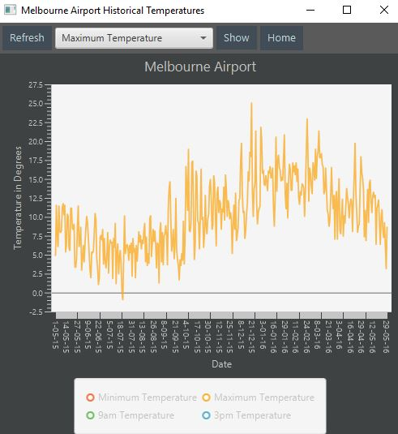

Navigation and Usage
After installation go ahead and open up the program.
This is the home screen and heart of the program: PICTURE OF HOME SCREEN.
Through here, you can access the information of any weather station throughout Australia and the Antarctic region. At the top you will see a search bar, this is useful for finding a specific station. Just type in your desired location and the system should narrow the list down for you. INSERT PICTURE OF SEARCHING FOR LOCATION AND LIST CHANGE.
Once you have located the perfect location, click on the stations button to display the list of options available to you. PICTURE OF....YEAH YOU KNOW WHAT I MEAN.
You can already see here a list of average locations over the past 72 hour period, this is essentially what the recent average temperature throughout different time periods of the day has been.
If there is no temperature information over the period, a diamond symbol will be shown for representing a lack of appropriate data available
Further weather information can be explored when clicking on one of the desired buttons that mentions a graph. The first of which is historical data , lets take a look at that now. 
Here you can see a graph of the temperatures at certain times of the day over the previous month. You can expand the graph by either dragging the corners to a desired size, or expanding it to full screen via the button directly to the left of close
following historical data is the 72 hour graph graph:
This graph represents the change temperature over the last seventy two hour period of time since the most recent reading. Thesse readings are grabbed in thirty minute periods, providing a more recent look at the locations temperature.
Close those two graphs and let's head back to the home screen...
From here you've gone through almost all of what the program has to offer. The last feature to be explained is the favourites system. In order to make searching for your desired stations easier in the future, you can click this button after finding a location. INSERT BUTTON OF FAVOURITES THING
This will add the station in your favourites tab: INSERT FAVOURITES TAB PHOTO.
After closing and opening up the program, you're favourites will be exactly where you let them. So don't worry about losing your list!
Now you are considered to be an expert in our SEPAT 2016 assignment part 1 solution. I hope you enjoy using the application. From now, you can easily locate weather related information to help in your general weather related interests or research.